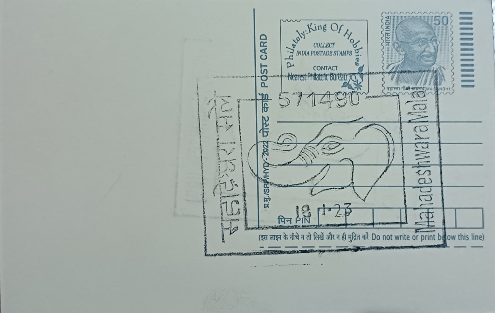

Elephant
ಆನೆ


The Asian elephant (Elephas maximus) is known in Kannada as "aane," an animal woven into regional memory not through a single founding legend tied to Mahadeshwara Malai itself but through the Male Mahadeshwara hill range's long identity as forest frontier country, where shrines to the ascetic-deity Mahadeshwara stand amid terrain elephants have traversed for generations. The surrounding Male Mahadeshwara Wildlife Sanctuary, spread over roughly 906 square kilometres, forms a continuous forest belt with the Biligiri Rangaswamy Temple (BRT) Tiger Reserve, the Cauvery Wildlife Sanctuary, and Tamil Nadu's Sathyamangalam Tiger Reserve, placing the post office's namesake landscape squarely within one of the subcontinent's most important elephant ranges rather than treating the animal as an isolated motif.
As a species, the Asian elephant is the core large herbivore of the Nilgiri Biosphere Reserve and is classified as Endangered on the IUCN Red List, with India holding the largest share of the world's wild population. Karnataka itself carries particular weight in that picture: the state's 2023 synchronised elephant census, conducted with technical support from the Indian Institute of Science across 32 forest divisions, estimated roughly 6,395 elephants statewide, up from about 6,049 in 2017, giving Karnataka the highest elephant count of any Indian state. Within this count, the Bandipur and Nagarahole Tiger Reserves recorded the highest densities, underscoring Chamarajanagara and adjoining districts as the demographic core of South India's elephant population.
The ecological role of the species is defined less by any built structure than by its scale and movement: an adult bull can weigh over 5,000 kilograms and consume upward of 150 kilograms of vegetation daily, behaviour that opens and reshapes forest understorey, disperses the seeds of numerous tree species across long distances, and maintains the waterholes and grasslands other wildlife depend on. Because elephants range over areas far larger than any single protected reserve, their movement patterns have become the practical basis for identifying and legally securing wildlife corridors, including stretches of forest and private land specifically mapped to keep the Male Mahadeshwara range connected to BRT and onward into Tamil Nadu and Kerala.
A concrete illustration of this corridor work is the Edeyarahalli-Doddasampige Elephant Corridor, where the Karnataka Forest Department and the Wildlife Trust of India purchased roughly 25 acres of fragmented land specifically to reconnect the Male Mahadeshwara Wildlife Sanctuary with the BRT Tiger Reserve, restoring a passage that agricultural encroachment had narrowed. Proposals to formally upgrade Male Mahadeshwara into a tiger reserve, discussed for well over a decade, have been pursued partly because tiger-reserve status would bring stronger protection to the same forest tracts that sustain this elephant movement, reflecting how conservation planning in the district treats tiger and elephant habitat as functionally inseparable.
Day-to-day management of this landscape falls to the Karnataka Forest Department's Chamarajanagara and Male Mahadeshwara Wildlife Sanctuary divisions, working alongside conservation partners such as the Wildlife Trust of India on corridor securement and with periodic synchronised census exercises coordinated across Karnataka, Tamil Nadu, Kerala, and other southern states to track population trends. Human-elephant conflict remains an active administrative concern along the sanctuary's farming fringes, prompting measures such as solar fencing, trenches, and rapid-response units in villages bordering the corridor. The elephant's association with this post office therefore reflects a working conservation landscape, one where forest officials, researchers, and neighbouring farmers continue to negotiate the practical realities of sharing ground with South India's largest wild elephant population.
| Date of Introduction | January 21, 2022 |
|---|---|
| Address | Sub Postmaster, |
| Mahadeshwara Malai SO, | |
| Chamarajanagara (dt.), Karnataka - 571490. |